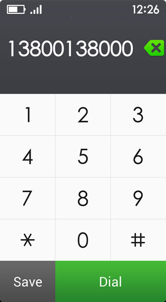

Operasi dasar
- Tekan dan geser
Tekan item untuk membuka atau memicu fungsinya. Untuk menggeser, gerakkan jari anda dengan cepat di permukaan layar. Anda dapat menggeser untuk memindahkan layar. - Tahan tekan dan geser
Tahan tekan item di layar dengan menekan dan jangan pindahkan jari anda sampai merespon. Untuk menggeser item, tekan & tahan sementara, tanpa mengangkat jari anda, kemudian geser hingga anda mencapai posisi yang diinginkan.
Layar utama

- Untuk menampilkan apl yang berbeda di layar utama anda, geser ke kiri atau kanan.
- Untuk membuka apl, tekan icon yang berada di layar utama.
Telepon

- Log panggilan
Panggilan tak terjawab digaris bawahi dengan warna merah.
Untuk melihat info kontak, pilih namanya.
Untuk memanggil, pilih 'Panggil'.

- PIlih dan simpan kontak
Pada layar tombol panggilan, pilih 'Simpan' untuk menyimpan nomor yang telah dimasukkan.
Pesan

- Pesan
Untuk pesan yang digaris bawahi warna merah.
Untuk menampilkan pesan dari salah satu kontak anda, pilih namanya.
Untuk menulis pesan baru, tekan 'Pesan Baru'.

- Percakapan
Untuk meningkatkan ukuran huruf pesan, tekan.
Untuk mendengarkan pesan, tekan icon Speaker.

- Menulis pesan
Tekan 'Pesan Baru', masukkan nomor telepon penerima atau pilih nomor dari kontak anda, kemudian tulis atau rekam pesan anda.
Kontak

- Cari kontak
Anda dapat mencari kontak menggunakan huruf pertama dari nama mereka.

- Menambahkan kontak baru
Masukkan nama kontak anda, kemudian masukkan nomor telepon mereka di bawah ini.